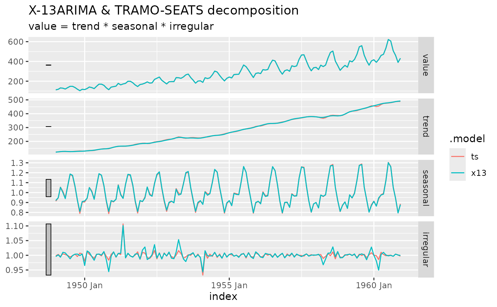

Defines a TRAMO-SEATS model to be used inside fabletools::model(). The
model is estimated with rjd3tramoseats::jtramoseats() and the Java result
is kept in the fitted model. Arguments and specials are the same as for
X13().
Usage
TRAMOSEATS(
formula,
spec = c("rsafull", "rsa0", "rsa1", "rsa2", "rsa3", "rsa4", "rsa5"),
context = NULL,
ref_spec = spec,
...
)Arguments
- formula
Model formula: the name of the variable to adjust (
y), ory ~ specials(see jd3_specials).- spec
Base specification: a character name or a specification object from
rjd3tramoseats::tramoseats_spec().- context
A modelling context created with
rjd3toolkit::modelling_context()(e.g. for custom calendars), orNULL.- ref_spec
Reference specification stored in the model: it is the reference of the refresh policies used by
refit()andstream(). Defaults tospec, that is the specification before its modification by the specials.- ...
Currently unused.
Value
A model definition that can be passed to fabletools::model(). Once
fitted, the mable column contains a jd3_model object. Use
components() to get the decomposition as a dable
(columns trend, seasonal, irregular and season_adjust).
Examples
y <- tsibble::as_tsibble(AirPassengers)
mb <- model(y, ts = TRAMOSEATS(value))
components(mb)
#> # A dable: 144 x 7 [1M]
#> # Key: .model [1]
#> # : value = trend * seasonal * irregular
#> .model index value trend seasonal irregular season_adjust
#> <chr> <mth> <dbl> <dbl> <dbl> <dbl> <dbl>
#> 1 ts 1949 Jan 112 123. 0.913 0.998 123.
#> 2 ts 1949 Feb 118 124. 0.947 1.00 125.
#> 3 ts 1949 Mar 132 126. 1.05 0.996 125.
#> 4 ts 1949 Apr 129 127. 1.01 1.00 127.
#> 5 ts 1949 May 121 127. 0.950 1.00 127.
#> 6 ts 1949 Jun 135 126. 1.07 1.000 126.
#> 7 ts 1949 Jul 148 126. 1.18 0.995 125.
#> 8 ts 1949 Aug 148 127. 1.17 0.999 127.
#> 9 ts 1949 Sep 136 128. 1.06 1.00 129.
#> 10 ts 1949 Oct 119 130. 0.922 0.996 129.
#> # ℹ 134 more rows
# Fit both methods side by side and plot the seasonally adjusted series
mb <- model(y, x13 = X13(value), ts = TRAMOSEATS(value))
if (requireNamespace("ggtime", quietly = TRUE) && requireNamespace("ggplot2", quietly = TRUE)) {
ggplot2::autoplot(components(mb))
}
#> Warning: `autoplot.dcmp_ts()` was deprecated in fabletools 0.6.0.
#> ℹ Please use `ggtime::autoplot.dcmp_ts()` instead.
#> ℹ Graphics functions have been moved to the {ggtime} package. Please use
#> `library(ggtime)` instead.
